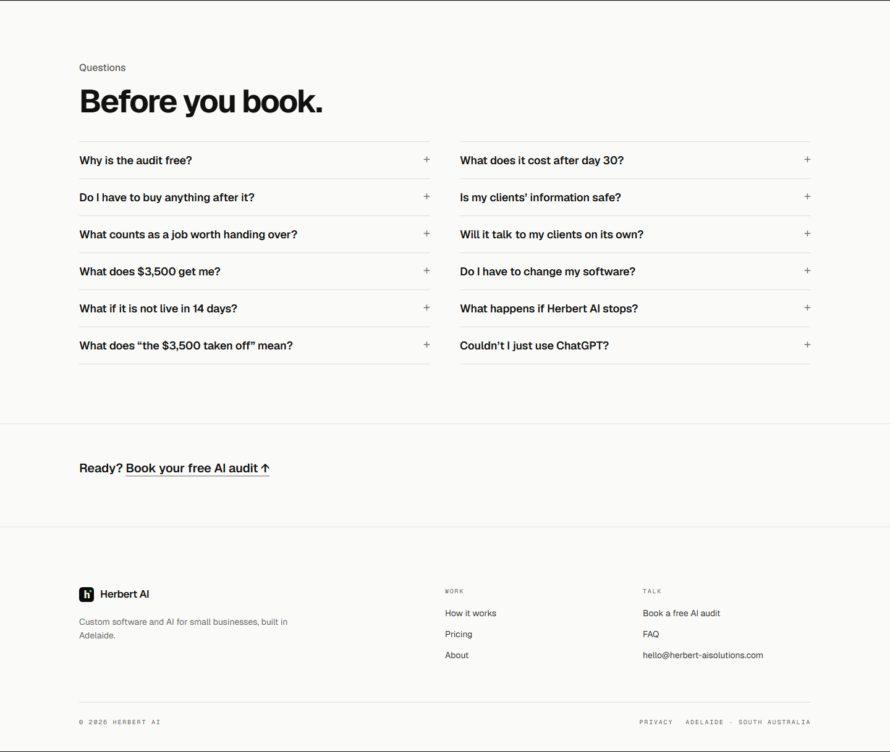
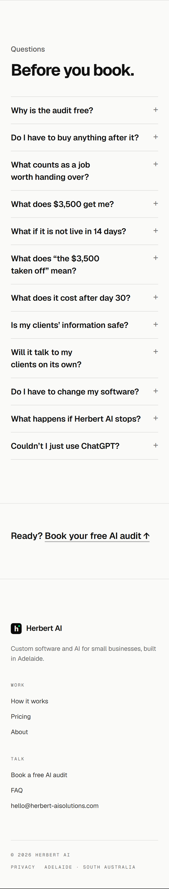
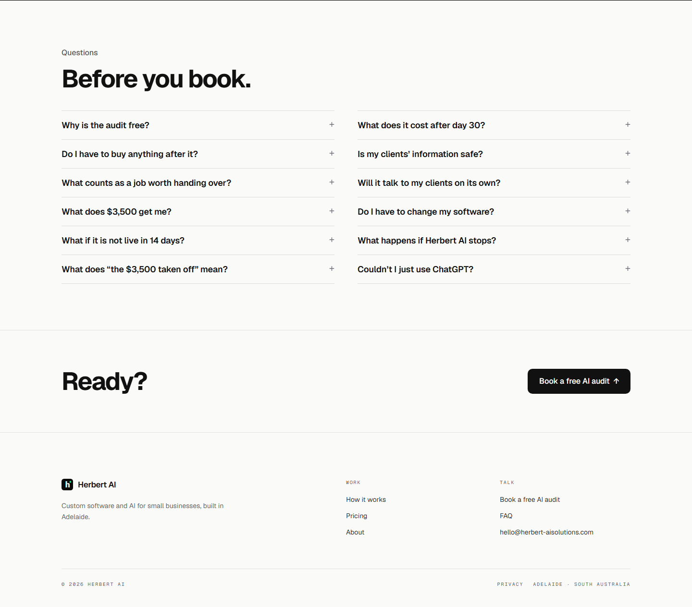
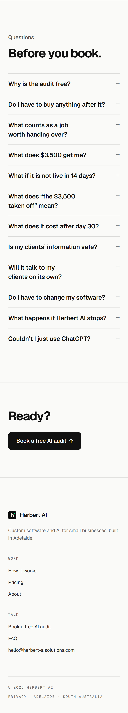
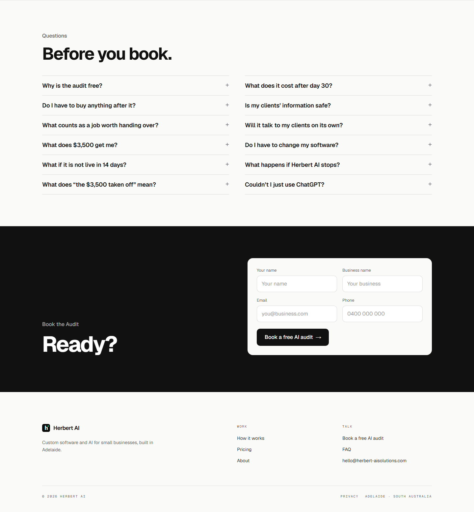
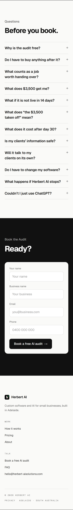
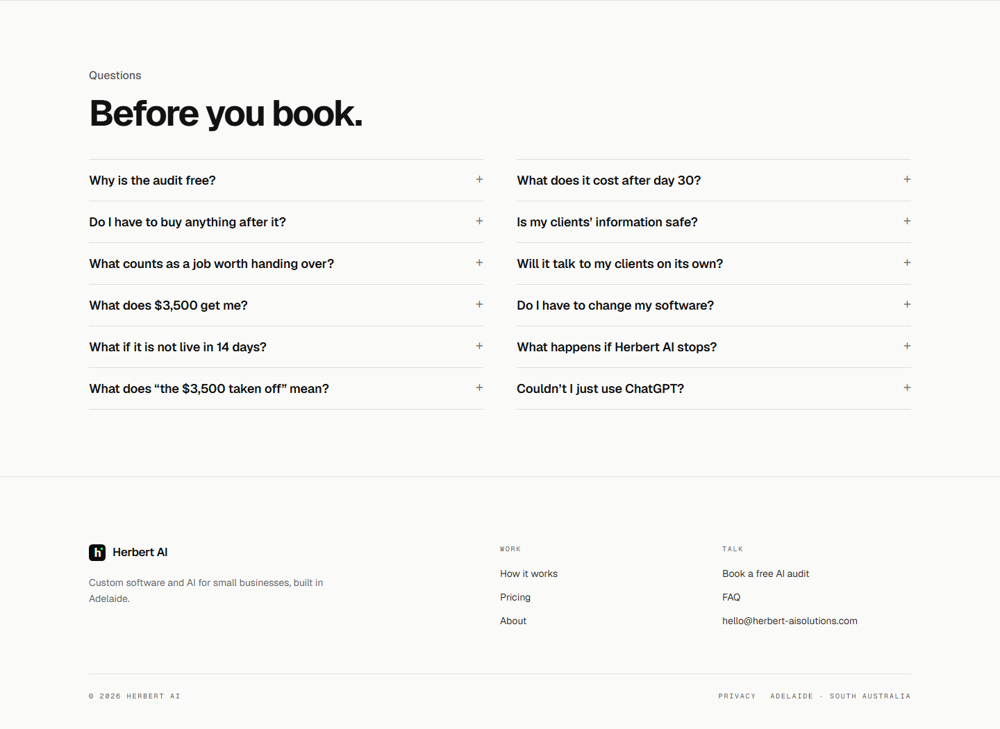
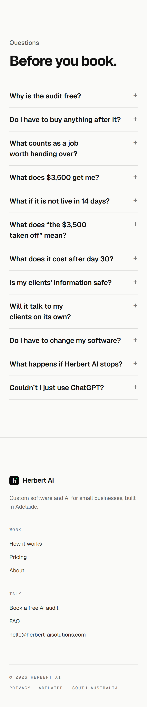

The last thing on /pilot, after the twelve questions and before the footer. Each option is drawn as the page's end: the questions above, the close, the real footer below.
| Who reaches it | An owner who has read all of /pilot, from the form at the top through the sample report, the timeline, the jobs, the stages and the twelve questions, and has not booked. On a phone the page is 7,320px tall, so the form is a long way up. |
| What they leave with | One action: the form. The anchor link jumps there instantly; the question is what the page ends on. |
| Today | A one-line text link, then the footer, whose Talk column has "Book a free AI audit" as well. |
| What bounds it | The marketing-site register (Will, 10 and 12 Oct 2026, on the home page): the black audit button appears at the hero and at the end, and the sections between close on a text link. /pilot's hero carries the form instead of a button. The home page ends on the form in a dark band. /pilot does not move. The audit form's field ids are fixed, so a second copy on one page needs a prefix. The words ("Ready?") are the details pass, with a line test. |







